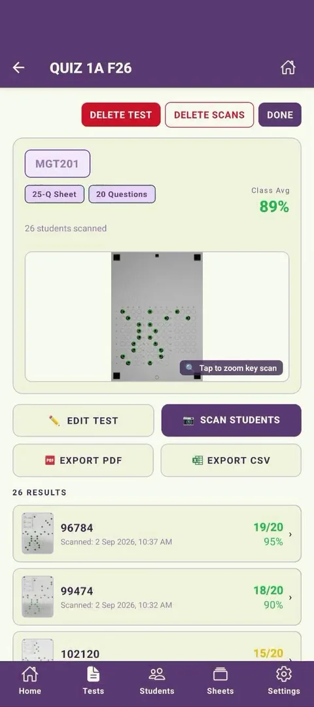
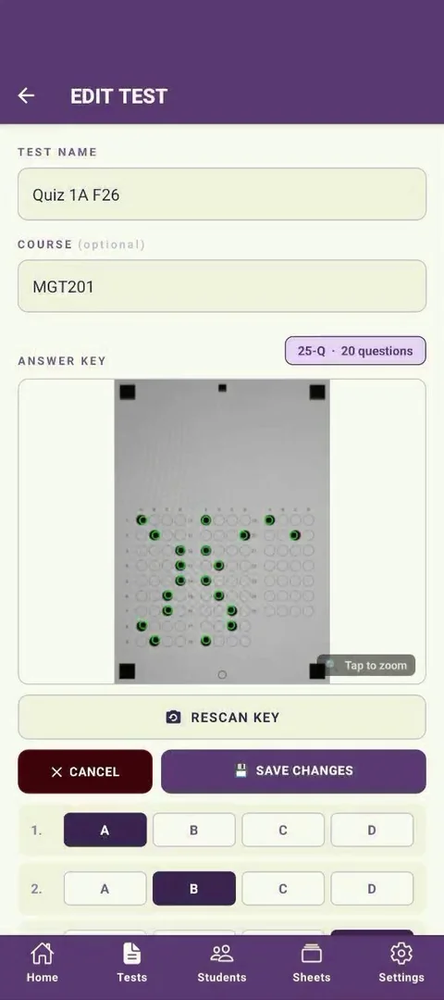
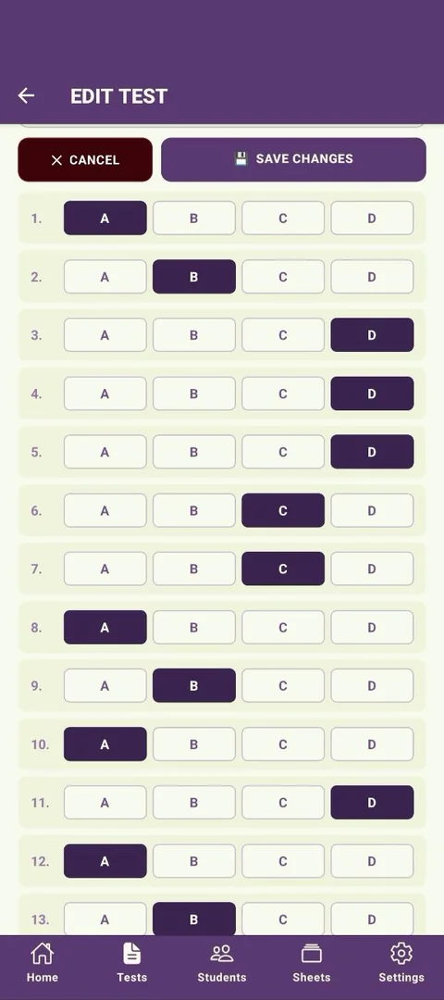
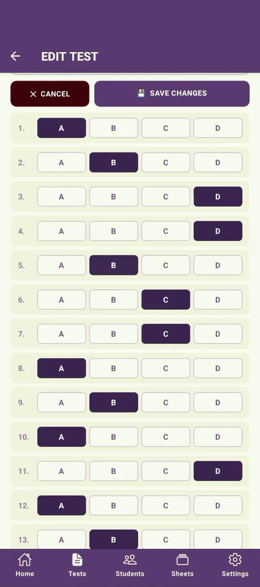
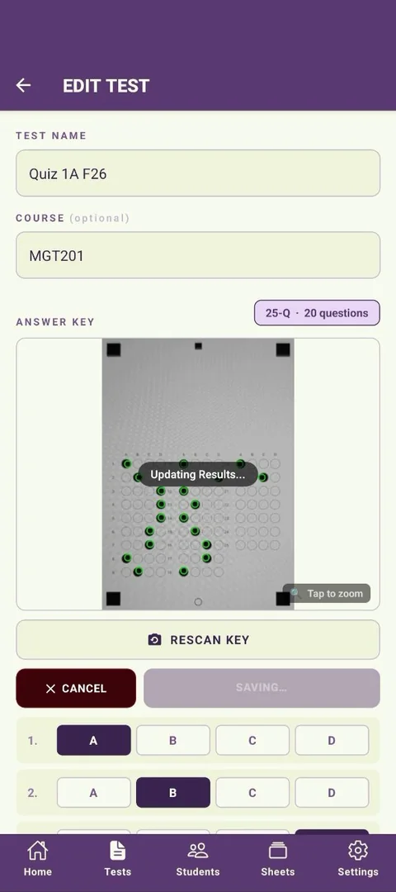
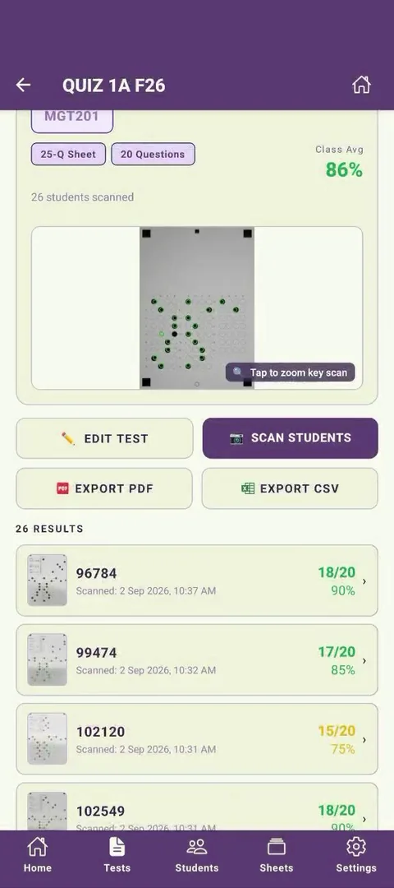

Made a mistake on the key? Decided to drop a question? Edit the answer key at any time and CamGrader instantly recalculates every student's score. No rescanning needed.
Tap the test you want to update from the home screen. You'll see the class average, the key scan, and every student's result - this class is at 89% across 26 students.

Tap Edit Test and the answer key editor opens, showing the test name, course, the key scan, and every question with its current correct answer already selected.

Scroll to the question you want to fix and tap the new correct answer. Here, question 5 is being changed from D to B - the highlighted button updates immediately, and you can change as many questions as needed before saving.


Tap Save Changes. CamGrader shows a brief "Updating Results..." indicator over the key scan while it recalculates every student's score against the new key - no rescanning needed.

The class results list reflects the new key right away. Because question 5's correct answer changed from D to B, students who'd picked D lost that point - this class's average dropped from 89% to 86%, with students 96784 and 99474 each down one question.
